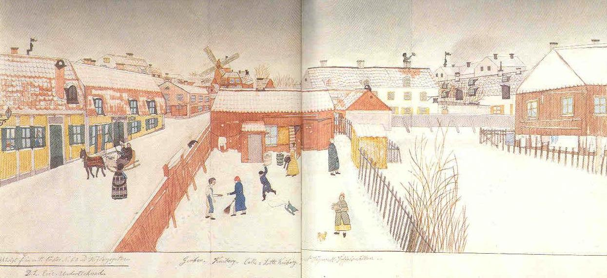

|
EN VINTERDAG
Josabeth Sjöberg i rutig kappa med tillhörig pellerin möter Doktor Levin i släde med kusken Erik på den snöiga Högbergsgatan. Levin lyfter på sin höga hatt, vindskyddad av ett fint utstofferat slädnät i filet-spets, väl markerad i täckvift. Hästen är också välutrustad med fint täcke. I huset bakom nummer 53 står porten öppen till en tobakshandel, vars skylt sitter över fönstret till höger. Gårdssceneriet i mitten visar åtminstone en ståndsperson nämligen löjtnanten G. A. Segervall, boende i huset till höger dit han är på väg med nyckeln efter en visit i hemlighuset på Högbergsgatan. |
Gerber som ser ut som en boddräng bjuder snösoparen Kniberg en pris snus, medan Calle nästan lyckas träffa den svarta katten på planket med en snöboll. (Bollen synlig i luften några millimeter ovanför kattens rygg.) Fröken Kniberg pysslar med sin bahytt intill det åldrade brygghuset. Toffelsmällan bär in ved i sällskap med sin gul spräckliga katt. Intill huset Timmermansgatan 38 en väl synlig garvarskylt: ett plåtskinn. |
